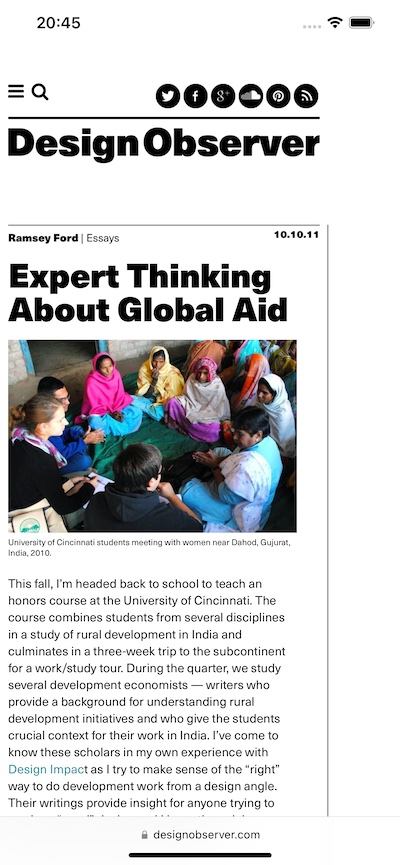

title: 网页阅读图书化
1. 介绍
此功能能够将网页信息转换成“电子书”。它会剔除网页里的一切非阅读信息，比如广告、链接等，将新闻或者其他信息转换成听阅阅读的格式。
以网页https://designobserver.com/feature/expert-thinking-about-global-aid/30658为例。
该网页原始内容如下：

将网页利用听阅电子书化后的页面如下：
2. 使用方法
在首页点击页面底部+号，选择“从网页创建书籍”，输入需转换网页的网址并点击“打开”。等待页面加载完成，然后点按右上角的“提取文本”。检验提取文本内容是否和网站内容相符，然后点按“创建书籍”。之后，您就可以像阅读其他电子书籍一样阅读网页内容。